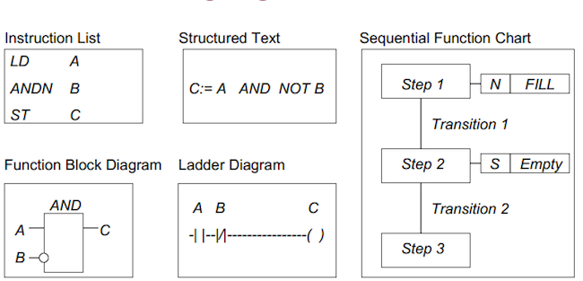

1.2.2. Fundamental concepts¶


1.2.2.2. POU: Program Organization Unit¶
1.2.2.2.1. Organization Block¶

Organization Blocks
1.2.2.2.2. Function¶

Create and use a function as code organization
1.2.2.2.3. Function Block¶
1.2.2.3. PLC programming languages¶
- The standard IEC 61131-3 define 5 programming languages for PLC:
- IL: Instruction List (STL in Step7)
- LD: Ladder Diagram (LAD in step7)
- ST: Strucured Text (SCL in Siemens)
- SFC : Sequential Fucntion Chart
- FBD: Fucntion Block Diagram
